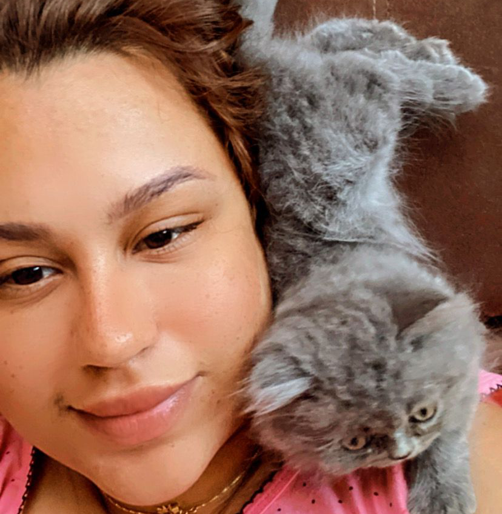
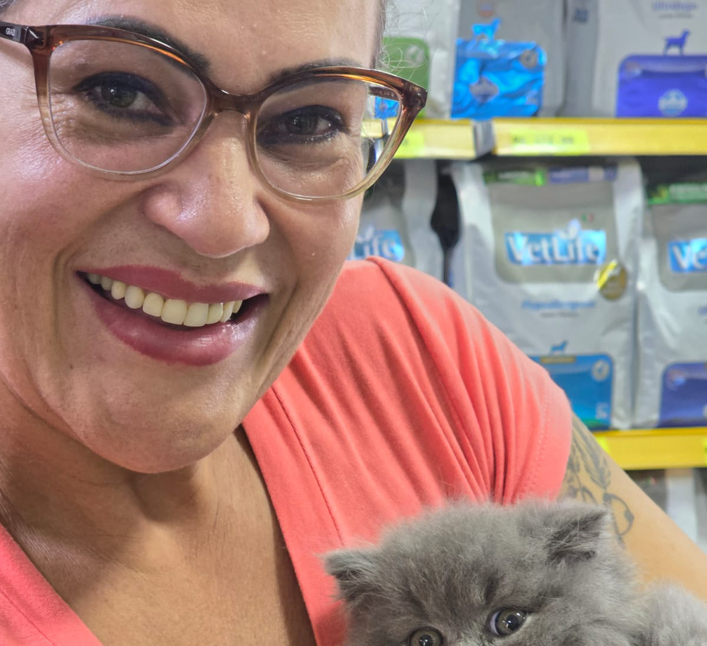

Eles Testaram e o Problema Sumiu
Histórias reais de tutores que, assim como você, já sofreram com o xixi fora da caixa… e hoje vivem tranquilos, sem estresse e com a casa limpa.

Gabriella
Carla

Cinthna Fernandes
Thalita Faria